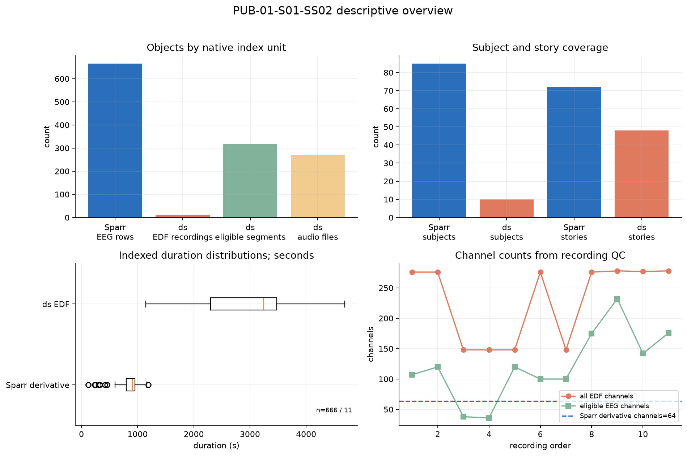
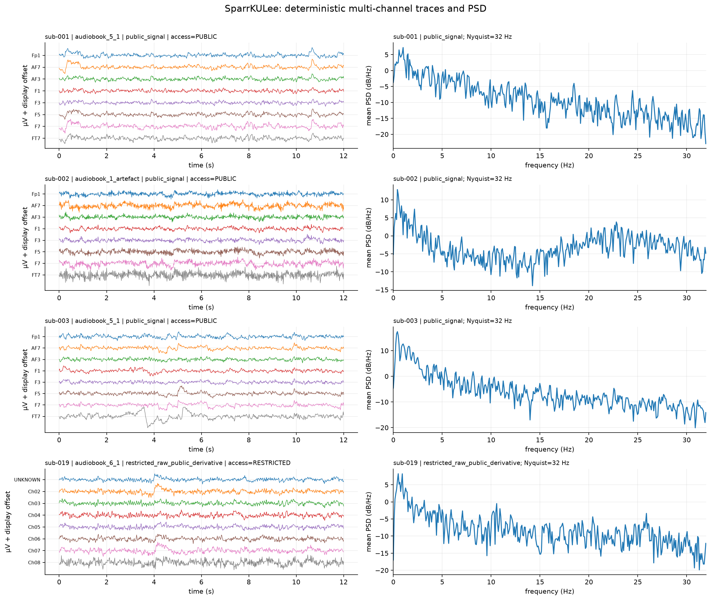
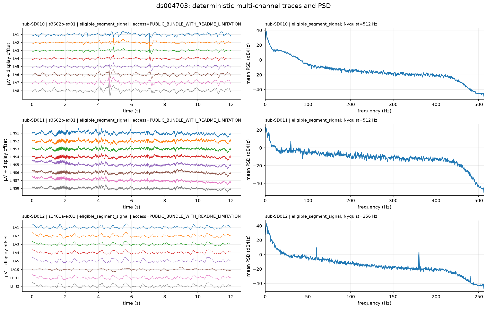
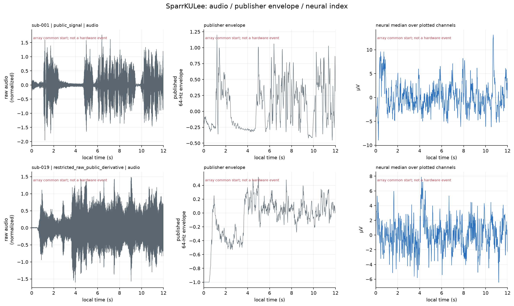
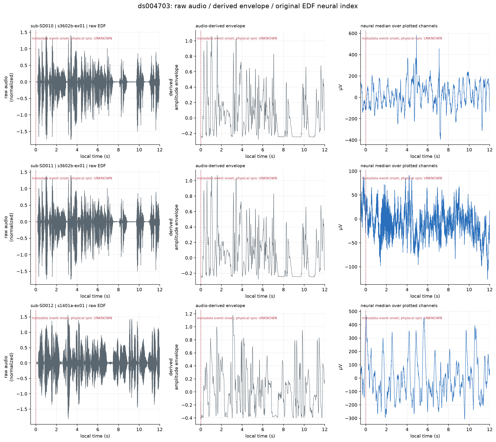
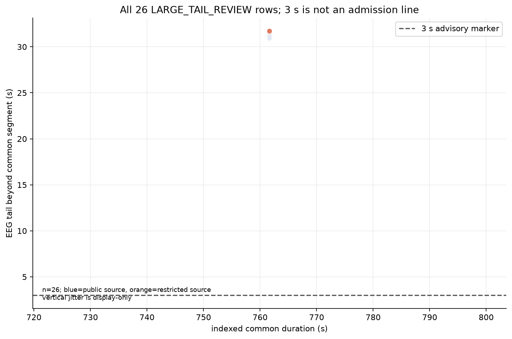
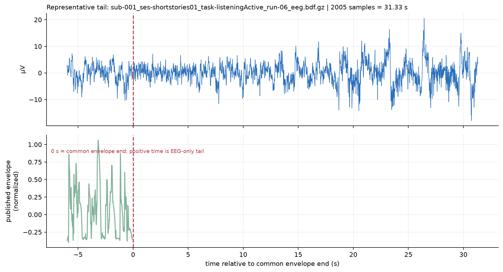

| Dataset / unit | Scale | Duration | Sampling / channels | Story coverage |
|---|---|---|---|---|
| SparrKULee published derivative rows | 666 rows; 85 subjects; 85 sessions | 158.46 h total; 119.41–1191.42 s/row | 64 Hz; 64 publisher derivative channels; Nyquist 32 Hz | 72 story labels |
| ds004703 original EDF | 11 recordings; 319 eligible segments; 270 WAV files | 8.83 h total; 1146.50–4687.50 s/recording | native 512 Hz, 1024 Hz; channel counts from recording QC | 48 eligible story labels |

实际内容：对象数、时长、通道和 story 覆盖来自已有 full indexes；不同对象单位没有混为一个 n。
观察与可开展分析：Sparr derivative 行适合 64-Hz 短窗表征；ds 的 recording、segment 和 WAV 支持不同层级的描述性汇总。正式分析需按目标明确汇总层级。
后续 QC：故事版本、物理同步、通道处理和 split 仍需冻结。

发布方 64-Hz preprocessed EEG，PSD 不超过 32-Hz Nyquist；含 normal public pair 和 restricted raw、public derivative 示例。受限 raw 未读取，图形不能证明其原始单位或同步。

原 EDF 事件附近小窗和 eligible 通道；单位只在可核验时转换为 µV；PSD 上限为各样本的 fs/2。event alignment 不是物理同步证明。

Sparr 的 0 s 是 array common start，不是 hardware event；受限示例不请求 restricted raw。

ds 的 envelope 由公开 WAV 在服务器即时计算；0 s 是 metadata event onset，physical sync UNKNOWN。


尾差是连续长度关系，不应简化为 3 s 二元准入；可作为 alignment diagnostic 或敏感性分层候选变量。
sample_manifest.csv · SAMPLE_PARAMETERS_COMMANDS.md · plot_exploration.py